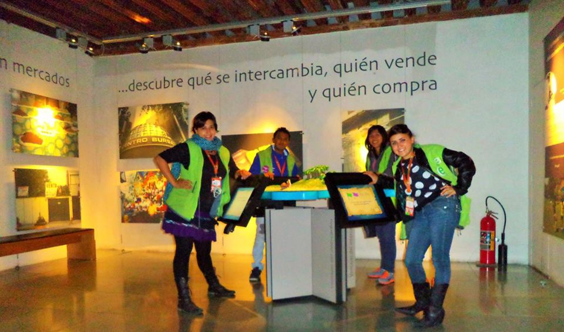

LILIAN MISHEL MARTINEZ MEDEZ
"Estoy dispuesta a sumergirse en los proyectos más desafiantes y tengo un rechazo total a la pereza y al engaño. Me dedico a estudiar Ingeniería en Sistemas Computacionales por las tardes.
Ademas comprometida con la programación y las TICS. Soy una mujer que abraza los valores de la honestidad, dedicación, dignidad, haciendo gala de mi capacidad de unir a las personas y en defensa de los valores tradicionales."
Experiencia Laboral
MIDE -Museo Interactivo De Economía 2015
Estuve allí como Becaria, en un periodo de un lapso de 6 meses Aproximadamente.
Las actividades que desempeñaba era:
- Orientar al público sobre servicios y actividades
- Recibir y atender cordialmente a los visitantes.
- Ayudar a resolver y/o canalizar sus necesidades e inquietudes
- Interactuar para comunicar los mensajes y contenidos.
- Colaborar en la recepción de grupos.
Aprendizaje :
- Mediación y habilidades de comunicación
- Flexibilidad y trabajo en equipo
- Compromiso por la calidad
- Conocimientos en economía y patrimonio histórico

Educación
TESE [Tecnologico de Estudios Superiores de Ecatepec]
Hoy en dia estoy estudiando Ing.Sistemas Computacionales por las tardes,a lo largo de la carrera me ha llevado a ser autodidactica,trabajar bajo presion,convivir con diferentes tipos de personas.
Aprendizaje :
- Autodidactica
- Trabajo en equipo
- Trabajo bajo presión
- Aprender nuevos lenguajes de programacion
- C
- Java
- JavaScript
- HTML5
- CSS3
- jQuery
- SASS